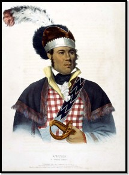
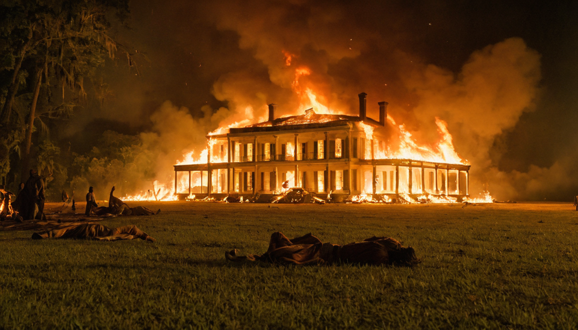

Indian Removal & Ethnic Cleansing
1820-1845
Native Americans After the War of 1812
The Situation:
~125,000 Native peoples live east of Mississippi River
"Five Civilized Tribes" in Southeast: ~60,000 people Cherokee, Creek, Choctaw, Chickasaw, Seminole
Increasingly surrounded by white settlement
Federal Policy Claims:
"Civilize" and "Christianize" Native peoples
Then they can remain on their lands
Assimilation is the official goal
📖 Understanding This Slide
Main idea: After 1815, roughly 125,000 Native people still lived east of the Mississippi—about 60,000 in the Southeast among the so-called “Five Civilized Tribes.” U.S. policy claimed assimilation would secure their place; reality moved another way.
⚡ Content Breakdown
Population & location: Dense Native presence remained in the East even as white settlement expanded.Policy promise: “Civilize and Christianize” → remain on ancestral land.Tension: Official rhetoric vs. outcomes you’ll see on later slides.
🏛️ Big Picture Synthesis
From the start, there’s a mismatch between stated goals and material pressures (land, migration, profit). This gap is the through-line that explains why “assimilation” didn’t protect communities.
🎓 Historians Weigh In
Francis Paul Prucha, *The Great Father* Prucha shows federal Indian policy often presented itself as benevolent while aligning with expansionist imperatives—and those imperatives won.
Why Removal? Three Intertwined Reasons
Three Intertwined Reasons
1) Economic Greed: Land Hunger
2) Racial Ideology: “Civilization” Rhetoric as Cover
3) Political Pressure
The Pattern: Assimilation was never the real goal—land acquisition was.
📖 Understanding This Slide
Main idea: Removal is driven by a triad—land hunger , racial ideology , and political pressure —three gears turning the same shaft toward dispossession.
⚡ Content Breakdown
Economic: Cotton profits on fertile southeastern land + 1828 gold discovery intensify demand.Racial ideology: “Civilization” talk functions as cover; status didn’t change prejudice.Political: Georgia’s compact and state defiance push Washington toward accommodation.
🏛️ Big Picture Synthesis
When profit , prejudice , and politics align, policy follows. Even perfect compliance with white norms couldn’t alter the destination.
Competing Sovereignties: The Legal Battle
Tribes Assert Nationhood
Cherokee Nation writes constitution (1827) Declares Cherokee sovereignty and independence
"We are a nation, not subjects of Georgia"
U.S. Government’s Position
Tribes are “domestic dependent nations”
Subject to federal (not state) authority
But NOT fully sovereign
Georgia’s Position
Indians have NO sovereignty
State law applies to all people in Georgia
The Clash: Three competing claims to authority will be decided by the Supreme Court—and then ignored.
📖 Understanding This Slide
Main idea: Three overlapping sovereignty claims—tribal nationhood, federal oversight, and Georgia’s state authority—collide in court and in practice.
⚡ Content Breakdown
Cherokee nationhood: Constitution (1827) asserts sovereignty.Federal stance: Tribes as “domestic dependent nations” → limited but real autonomy.Georgia: Denies sovereignty, asserting state law over all within its borders.
🏛️ Big Picture Synthesis
Law doesn’t operate in a vacuum—enforcement is the hinge. Even clear doctrines can be nullified by defiance on the ground.
🎓 Historians Weigh In
Francis Paul Prucha, *American Indian Policy in the Formative Years* Prucha explains how legal categories balanced between treaty recognition and paternal oversight—fertile ground for conflict.
Intra-Tribal Divisions: The McIntosh Case
Economic transformation creates winners and losers WITHIN tribes
Major shift in Creek society:
Away from communal sharing toward private property
Rise of planter-elite of mixed heritage
Christian missionaries catalyze changes
Chief William McIntosh (Creek):
Mixed Creek-Scottish heritage, wealthy planter
Believed removal was inevitable

Chief William McIntosh (Creek)
“Better to negotiate the best deal and move west.”
📖 Understanding This Slide
Main idea: Economic change created class divisions within Native societies, producing factional strategies—from resistance to negotiated removal.
⚡ Content Breakdown
Shift to private property: A planter elite emerges with different incentives.William McIntosh: Anticipates removal; seeks terms rather than catastrophe.Creek Council: Tries to deter land sales with capital penalties.
🏛️ Big Picture Synthesis
When external pressure rises, internal disagreements sharpen. This means “tribal decision” isn’t singular—policy fractures communities.
🎓 Historians Weigh In
John W. Caughey, *McIntosh and the Creek Nation* Caughey details how economic transformation and U.S. pressure produced fatal rifts inside the Creek polity.
The Creek National Council Decree (1821)
Lead-Up to the Decree
After the War of 1812, U.S. pressure for Creek land cessions intensified.
Federal and Georgia officials bribed chiefs to sign unauthorized treaties.
Internal rifts grew between traditional leaders and mixed-heritage elites.
The National Council acted to defend tribal sovereignty and unity.
Decree of the Creek National Council
Adopted at Broken Arrow, 1821
Any Creek who sells or conveys national land without Council consent shall suffer death .
Private land agreements with settlers hold no legal standing.
All lands are held in common under the protection of the Council.
📖 Full Context
After the War of 1812, the Creek Nation was under relentless pressure from federal and state governments to cede more land. The 1814 Treaty of Fort Jackson had already forced the loss of over 20 million acres—half the Creek domain. U.S. agents began using bribery and private negotiations to secure further cessions, bypassing the Creek National Council entirely. This tactic fractured the nation: a wealthy mixed-heritage planter class sought accommodation with American authorities, while traditionalists insisted on communal ownership and independence.
By 1821, the Creek leadership recognized that these private land sales were destroying their sovereignty from within. The National Council met at Broken Arrow and declared that any individual who sold national land without the Council’s authorization would be executed. This decree represented both a desperate defense of tribal integrity and a declaration of independence against U.S. manipulation.
🏛️ Big Picture Synthesis
The 1821 decree illustrates how Native nations used written law to protect sovereignty when external force and internal division threatened to destroy it. This means the Creeks pursued legal nationalism—codifying resistance rather than merely rebelling.
🎓 Historians Weigh In
Michael D. Green, *The Politics of Indian Removal* Green argues that this decree represents a final assertion of Creek political unity, rooted in law rather than warfare. It was the last stand of Creek nationalism before federal removal policy overwhelmed Native sovereignty.
Treaty of Indian Springs (1825)
February 1825: McIntosh signs treaty at his inn
The Deal:
Ceded ALL Creek land in Georgia to United States
McIntosh and supporters receive $40,000 (bribe)
Opposed by majority of Creek people

Execution of William McIntosh (Creek), 1825
📖 What This Reveals
Removal created INTERNAL violence, not just external: many tribes split into factions under U.S. pressure. Minority deals claimed as “treaties” bound majorities, provoking retribution under tribal law. The pattern will repeat with the Cherokee “Treaty Party.”
⚡ Content Recap
The deal: All Creek land in Georgia ceded; faction leaders compensated.Response: McIntosh executed under Creek law as a land-seller.Pattern: U.S. recognition of a faction enabled dispossession despite majority opposition.
🏛️ Big Picture
“Treaty” functioned as a legal instrument to leverage internal division. This means sovereignty contests were fought both inside Native nations and in U.S. forums.
Cherokee “Civilization” Strategy
Economic Transformation:
Most Cherokee abandon hunting, adopt settled agriculture
Own farms, plantations, enslaved people
Operate mills, stores, ferries, inns
Cultural Adaptation:
Sequoyah creates Cherokee syllabary (1821) Cherokee literacy rate equals or exceeds white South
Cherokee Phoenix (1828):
Political Innovation:
Cherokee National Council passes written law codes
Establish police force and court system
Cherokee Constitution (1827): Mirrors U.S. Constitution
The Numbers (by 1835)
📖 Understanding This Slide
Main idea: By the 1820s–1830s, the Cherokee Nation had built institutions that met — and sometimes exceeded — U.S. “civilization” benchmarks: agriculture, literacy, Christianity, written laws, courts, schools, and a constitution. Their later removal exposes the policy’s true motives.
⚡ Content Breakdown
Economic: Productive farms, mills, stores; market agriculture; some enslaved labor mirroring Southern norms.Cultural: Sequoyah’s syllabary (1821); Cherokee Phoenix (1828); widespread literacy.Political: Courts, police, constitution; functioning schools and civic institutions.Mid-1830s: Property valued at $15–$20 million; prosperous communities by U.S. standards.
🏛️ Big Picture Synthesis — The Assimilation Paradox
Success increased white desire for Cherokee land. Criteria for “belonging” were a moving target aligned with white interests, not achievable standards.
🎓 Historians Weigh In
Theda Perdue & Michael D. Green , *The Cherokee Nation and the Trail of Tears* They document deep Cherokee institution-building, underscoring that capacity was not the obstacle; race and land hunger were.
🔎 Core Lesson
No amount of adaptation would secure Native land or sovereignty. This was not a civilizing mission; it was ethnic cleansing justified as policy reform .
Georgia Forces the Crisis
Gold Discovered (1828)
Gold found at Dahlonega, Georgia (Cherokee territory)
Gold rush begins
White settlers surge illegally into Cherokee land
Georgia’s “Extension Laws” (1829–1831)
Cherokee laws void within Georgia
Cherokees barred from testifying against whites
Cherokees prohibited from mining gold on their own land
White missionaries require Georgia license to remain
?? Understanding This Slide
Georgia leverages the gold rush to normalize illegal settlement, then hard-codes it through state law, collapsing Cherokee legal protections.
? Possible Answers to the Thought Question (for instructor)
Immediate: Rapid dispossession via arrests, intimidation, and unenforceable Cherokee claims; economic displacement as miners seize sites.Medium-term: Escalation to federal–state confrontation (missionary prosecutions ? Worcester v. Georgia ), national political polarization over removal.Legal/constitutional: State nullification of treaties/federal authority in practice; tests the supremacy of federal Indian policy and the Court’s capacity to enforce rulings.
??? Big Picture
Lawfare replaces negotiation: by voiding Cherokee law and access to courts, Georgia manufactures a reality that federal power struggles to reverse.
?? Historians Weigh In
Robert V. Remini , *Andrew Jackson and His Indian Wars* Remini argues Georgia engineered a constitutional showdown that made removal the path of least resistance for national politicians.
Cherokee Legal Resistance: Two Supreme Court Cases
Cherokee Nation v. Georgia (1831)
Question: Is Cherokee Nation a “foreign nation” that can sue Georgia?Marshall’s Decision: NO — Cherokees are a “domestic dependent nation.” Not a foreign nation, but not Georgia citizens either
Case dismissed on procedural grounds
Worcester v. Georgia (1832)
Question: Can Georgia enforce laws in Cherokee territory?Marshall’s Decision: NO — Cherokee Nation is sovereign Georgia laws in Cherokee territory are unconstitutional
Only the federal government has authority over tribes
?? Understanding This Slide
The Supreme Court asserted federal supremacy and recognized limited tribal sovereignty. However, without executive backing, these victories were symbolic rather than practical.
? Content Breakdown
1831: Cherokee Nation v. Georgia — status dispute; “domestic dependent nation” doctrine established.1832: Worcester v. Georgia — state laws void; federal power over Indian affairs reaffirmed.
??? Big Picture Synthesis
Law alone couldn’t secure justice. The rulings drew the line between moral principle and political will, foreshadowing the impotence of the judiciary in the face of executive indifference.
?? Historians Weigh In
Francis Paul Prucha, *The Great Father*Prucha notes that these cases show the fragility of judicial authority when the executive branch refuses enforcement — a key insight into 19th-century federalism.
When Law Meets Power
This Should Have Stopped Removal… But:
Georgia refuses to comply with the Supreme Court ruling
President Jackson refuses to enforce it
Apocryphally: “John Marshall has made his decision; now let him enforce it.”
Legal victory becomes meaningless without enforcement.
?? Understanding This Slide
This moment demonstrates how constitutional authority collapses when political actors ignore judicial restraint. The Court declared justice; the state defied it; the president looked away.
??? Analytical Note
Jackson’s refusal to enforce Worcester turns the decision into a case study in the limits of judicial independence — a precedent with implications reaching through U.S. constitutional history.
?? Historians Weigh In
Robert Remini, *Andrew Jackson and His Indian Wars*Remini calls this “a triumph of will over law,” arguing that Georgia’s defiance and Jackson’s silence made removal inevitable despite the Court’s clear rulings.
Jackson's Indian Policy
Jackson's Motivations:
Indians seen as barrier to American settlement of valuable farmland
Doubted Native peoples would ever fully join American society
:
Thought Indians were degraded by contact with whites
Believed removal would "save" Native peoples from extinction
Opening Indian land would strengthen Democratic Party power
?? Understanding This Slide
Jackson grounded removal in paternalist logic —
claiming it protected Native nations from destruction.
It softened the brutality of the policy in public eyes,
while directly enabling removal.
? Content Breakdown
Land hunger: Clear farmland for white settlementRacial worldview: Native peoples infantilized, cast as wardsPaternal spin: Removal framed as rescue, not coercionPartisan calculus: Helps Democratic frontier base
??? Synthesis
When domination is cast as protection, resistance becomes harder —
and cruelty hides behind “care.”
?? Historians Weigh In
Remini argues Jackson saw himself as a guardian, not a conqueror —
a belief that made his policy more resolute, not less.
Indian Removal Act (1830)
The Law:
Stipulated exchange of Indian territory in East for lands west of Mississippi
United States would "forever secure and guaranty" new lands in West
Government would pay for lost homes and removal
Government would protect Indians from all threats
The Vote:
Passed by only 5 votes in House
Strong opposition, especially from northern representatives
Shows removal was controversial even at the time
?? Understanding This Slide
Main idea: Congress authorized exchange of lands west for eastern homelands, promising protection “forever”—a pledge quickly overtaken by expansion.
? Content Breakdown
Statute: Legal framework for removals and treaty-making.Promises vs. practice: Guarantees eroded within decades.Vote margin: Passage was narrow —controversy existed at the time.
??? Big Picture Synthesis
Legality does not equal legitimacy. Narrow passage and broken guarantees reveal how contingent and contested the policy was.
?? Historians Weigh In
Francis Paul Prucha, *The Great Father* Prucha’s archival focus shows the gulf between statutory language and administrative reality.
The Treaty of New Echota (1835)
Who Signed:
"Treaty Party" — Major Ridge, John Ridge, Elias BoudinotRepresented ~500 of 17,000 Cherokees (~3%)
Principal Chief John Ross + elected Cherokee gov't opposed
The Deal:
Cede all lands east of the Mississippi
Receive $5 million
Land in “Indian Territory” (Oklahoma)
U.S. promises land will be theirs “forever”
Opposition: 15,000 Cherokees (˜88%) petitioned Congress — declaring this treaty illegitimate and unauthorized
?? Key Insight
A tiny minority signed; the overwhelming Cherokee majority rejected the treaty as illegitimate.
This was not consent — it was a faction leveraged against a nation.
?? Historiography
Perdue & Green stress that U.S. officials knowingly empowered a small, unrepresentative faction to force removal.
The Senate ratified by a single vote — legality stretched over democratic failure.
Treaty of New Echota: Aftermath
Senate Ratification:
May 1836 — Ratified by one vote
Legal — but not legitimate
The Price Paid:
1839: Major Ridge, John Ridge, Elias Boudinot assassinatedExecuted by Cherokee for treason against the nation
Internal justice ? internal tragedy
?? Interpretation
Ratification by a single vote signals deep national division. The assassinations mark how violently
contested “consent” and legitimacy were inside the Cherokee Nation.
??? Big Picture
A treaty can be constitutional and still be coercive. The state recognized a faction because
recognizing the majority would have meant respecting Cherokee sovereignty.
The Trail of Tears (1838–1839)
Forced Removal Begins:
~16,000 Cherokees rounded up by U.S. Army
Held in stockades before departure
Removal executed under Van Buren (Jackson’s policy)
The March:
~1,000-mile journey to "Indian Territory"
Traveled mostly on foot through harsh winter
~4,000 die from disease, exposure, starvation
The Trail of Tears = forced relocation, mass death, and destruction of homeland ties.
Next: How historians interpret this as ethnic cleansing .
?? Context for Lecture
This slide situates the forced march as the operational phase of federal removal policy.
Students have the documentary for eyewitness stories and suffering — this frame shows scale,
state authority, and lethal conditions without dramatizing over the film.
? Key Teaching Points
Removal was military-enforced and involuntary.
Conditions reflect administrative indifference to Indigenous life.
Mortality ~25% — catastrophic population loss.
Policy continuity: Jackson sets it; Van Buren carries it out.
??? Interpretive Note
This march wasn’t an unfortunate accident — it was the predictable outcome of
state-planned displacement. The terminology shift (“migration” vs “ethnic cleansing”) matters.
?? Historians
Perdue & Green emphasize bureaucratic violence and the way the federal state framed coercion
as legality and inevitability rather than choice.
Defining Ethnic Cleansing
What It Means:
Ethnic cleansing is the deliberate, organized removal of an ethnic or religious group
from a territory to create a homogeneous population.
Core Elements:
Forced displacement — not voluntary migrationGoal: Create ethnically "pure" or “orderly” territorySystematic policy — planned and administered by authorityCoercion and violence — intimidation, imprisonment, or deathDestruction — of homes, religion, and memory
?? Understanding This Slide
Ethnic cleansing lies on a continuum of state violence—short of genocide but often inseparable from it.
It’s not spontaneous hatred; it’s policy designed to remove an “undesirable” group while preserving
territory, resources, and hierarchy.
Distinction: Genocide aims to destroy a people.Ethnic cleansing aims to expel them.
?? Historians Weigh In
The term was coined during the 1990s Balkan Wars but describes patterns that appear throughout
the modern era—from the Highland Clearances to the Armenian and Rohingya expulsions.
Ethnic Cleansing Across History
Shared Features:
Use of state law and bureaucracy to force removal
Framed as "orderly relocation" or “necessary security”
Often presented as humanitarian protection
Destruction of land ties, heritage, and political identity
Teaching Notes
We intentionally excluded Armenia (1915) and Nazi Europe (1939–45) from the slide because both are classified primarily as genocide , not just ethnic cleansing.
Sources cross-referenced with grokipedia.com to ensure neutral and academically defensible descriptions.
Pedagogical goal: show students that removal in U.S. history aligns with a broader global pattern — states forcibly re-shaping population geography for demographic, political, and ideological aims.
Indian Removal as Ethnic Cleansing
Policy in Practice:
Government planned and administered mass removals (1830–1850s)
Used treaties, military force, and legislation to expel Native nations
Goal: open land for white settlement and cotton cultivation
Language of “protection” masked deliberate territorial redesign
What Makes It Ethnic Cleansing:
Targeted by ethnicity: all Native nations in the SoutheastCompelled under force: imprisonment, marches, and deathErasure of homeland identity: renaming, redistribution, myth of “vacant land”Result: removal, not coexistence — a “clean” map for settlers
?? Lecture Context
When historians label Indian Removal as ethnic cleansing, they emphasize policy intent and
administrative design rather than wartime chaos.
The U.S. state mobilized military, legislative, and ideological tools to remove a defined population
and transfer their land — the core definition of ethnic cleansing.
?? Historiography
Theda Perdue & Michael Green: Removal policy as “legalized dispossession.”David Stannard, American Holocaust: situates it within colonial genocide continuum.Patrick Wolfe: Defines settler colonialism as a “structure, not an event” —
removal is the system working as designed.
??? Synthesis
Ethnic cleansing reframes Indian Removal from national tragedy to deliberate
exercise of racialized state power. Students should connect this to broader logics of expansion,
profit, and national identity formation.
Was it Forced Displacement?
Discuss First (30–60 seconds)
Prompt: What concrete indicators would prove the removals were forced rather than voluntary migration?
Advance to reveal the evidence.
Ask for at least three indicators tied to state/military coercion, not individual choice.
Was it Forced Displacement?
Evidence Snapshot
~60,000–100,000 people removed from the Southeast.
Army/militia round-ups; families confined to stockade camps pre-departure.
Those who hid were hunted, seized, and imprisoned.
Marches under compulsion; refusal was not permitted.
Emphasize institutional compulsion (capture, confinement, guard details) distinguishing forced removal from economic migration.
Was the Goal Ethnic Homogeneity?
Discuss First (30–60 seconds)
Prompt: What policies or language would demonstrate an aim to “clear” one population and keep another?
Advance to reveal the evidence.
Nudge toward lines/zones, “no Indians remain,” and dual-territory frameworks.
Was the Goal Ethnic Homogeneity?
Evidence Snapshot
Declared objective to clear the East and concentrate tribes in “Indian Territory.”
Georgia’s “Extension Laws” made continued Cherokee presence untenable.
Operational outcome: “white” states east vs. “Indian” lands west.
Tie to Missouri line/territorial partition logic students saw earlier: governance by territorial sorting.
Was it Systematic Policy?
Discuss First (30–60 seconds)
Prompt: What shows design and coordination rather than isolated local actions?
Advance to reveal the evidence.
Steer them toward statute, treaty volume, and military logistics.
Was it Systematic Policy?
Evidence Snapshot
Indian Removal Act (1830) — federal legislative authorization.70+ treaties (1830–1842) implementing removals across regions.Coordinated execution among federal authorities, states, and the U.S. Army.
Gen. Winfield Scott commanded ~7,000 troops for Cherokee removal.
Name the instruments: statute → treaties → orders/logistics. The chain evidences design.
Was Violence/Coercion Used?
Discuss First (30–60 seconds)
Prompt: Identify practices that would move this from “escorted migration” to coercion and harm.
Advance to reveal the evidence.
Expect mentions of militia tactics, winter timing, provisioning failures, deaths en route.
Was Violence/Coercion Used?
Evidence Snapshot
Georgia militia harassment and intimidation campaigns.
Stockade camps prior to removal; families confined under guard.Forced marches with inadequate food, shelter, and medical care.
Those resisting were hunted, killed, or imprisoned; winter marching (e.g., Choctaw) raised mortality.
Clarify that logistical choices (season, rations, route control) functioned as coercive force multipliers.
Was There Community Destruction?
Discuss First (30–60 seconds)
Prompt: What losses show that more than mere relocation occurred?
Advance to reveal the evidence.
Guide them to land, institutions, sacred sites, and measured property losses.
Was There Community Destruction?
Evidence Snapshot
Homes burned; farms and improvements confiscated.
Cherokee capital (New Echota) dismantled; civic institutions abandoned.
Burial grounds desecrated; sacred sites lost.
$15–$20 million in Cherokee property value destroyed or seized (contemporary estimates).
Emphasize that the target was not only territory but the social infrastructure that made communities viable.
Trail of Tears: Why Did So Many Die?
Before We Look at the Numbers...
Discussion Prompt:
Based on what we've covered, what conditions during removal would likely increase mortality?
Food and supply shortages
Harsh weather and timing of marches
Long distances and difficult terrain
Forced confinement before departure
Lack of medical care
Violence, coercion, and stress
Disease exposure among large groups
Students discuss → then advance to reveal actual mortality rates.
This slide invites prediction and activates prior learning. The goal: make the data on the next slide emotionally and intellectually legible.
This also connects to broader themes of logistics, state capacity, and moral choice in policy execution.
The Human Cost: Mortality Statistics
The Numbers Tell the Story:
Tribe
Number Removed
Deaths
Mortality Rate
Cherokee 17,000
4,000–8,000
23–47%
Creek 15,000
3,500
≈23%
Choctaw 15,000–20,000
2,500–6,000
≈17–30%
Chickasaw 6,000
≈600
≈10%
Seminole 3,000
Unknown
Many died resisting
Total: ~60,000 removed • ~15,000–25,000 died • ≈20–25% mortality
What Drove Mortality?
Exposure, disease, starvation during forced marches
Inadequate provisions by U.S. contractors
Deliberately timed winter departures (Choctaw)
Overcrowded, unsanitary stockade camps
Main idea: Mass displacement under duress produced catastrophic loss of life. Logistics and policy choices—not inevitability—explain the deaths.
These figures flatten many human tragedies: families split, elders and children most vulnerable, spiritual sites abandoned, and economic life destroyed.
Prucha, Satz, Perdue & Green, and Thornton all offer compatible quantitative ranges; discrepancies reflect archival gaps and differing calculations of pre-removal mortality.